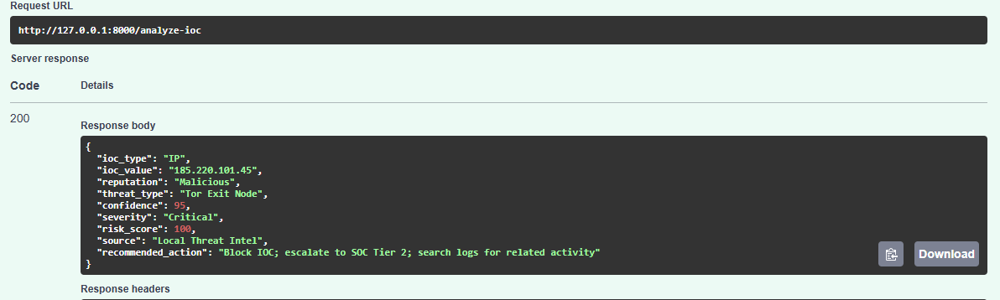

IOC Enrichment
Adds threat context to IP addresses, domains, and file hashes.
PROJECT 04 • THREAT INTELLIGENCE • IOC ANALYSIS
The Problem
IP addresses, domains, and file hashes may appear in alerts without enough context for an analyst to know how dangerous they are. Security teams need a way to enrich these indicators with reputation data, confidence, threat type, severity, and response guidance.
The Solution
The analyzer accepts indicators of compromise, compares them against local threat-intelligence data, enriches each indicator with reputation and threat context, and assigns severity, risk scores, and recommended analyst actions.
Adds threat context to IP addresses, domains, and file hashes.
Classifies indicators as Malicious, Suspicious, Trusted, or Unknown.
Uses intelligence confidence to support severity and prioritization decisions.
Produces recommended SOC actions based on the resulting severity and threat context.
Architecture
Threat Intelligence
Identifies contextual categories such as Tor Exit Node, Phishing Domain, or Known Malware Hash.
Returns the intelligence source associated with the indicator.
Maps reputation and confidence to Critical, High, Medium, Low, or Unknown severity.
Converts severity into a numerical score to support SOC prioritization.
IOC Evidence
The demonstrated IOC was identified as Malicious and categorized as a Tor Exit Node with 95% confidence. The analyzer assigned Critical severity, Risk Score 100, and recommended blocking the IOC, escalating to SOC Tier 2, and searching logs for related activity.

Analysis Results
Two malicious indicators were classified as Critical with Risk Score 100.
A suspicious file hash received Medium severity and Risk Score 50.
An unknown hash was assigned Risk Score 25 and marked for manual review.
Trusted indicators received Low severity and Risk Score 10.
Batch Analysis
The batch workflow analyzed six indicators across IP, domain, and hash types. Findings included malicious, suspicious, trusted, and unknown reputations with corresponding severity levels and analyst actions.
Supports analysis of network indicators such as malicious infrastructure and trusted services.
Supports reputation analysis for suspicious or legitimate domains.
Supports file-indicator enrichment including suspicious and unknown hashes.
Provides block, investigate, monitor, or manual-review guidance based on severity.
Engineering Lessons
Raw indicators provide limited value without additional context. Reputation, confidence, threat type, severity, source, and recommended actions make IOC data more useful for analyst triage and response.
This project demonstrates how threat intelligence can be transformed into structured security decisions through API access, risk scoring, and repeatable analysis workflows.
Future Improvements
Future development can include external threat feeds, automated reputation APIs, IOC expiration and aging, caching, confidence weighting, passive DNS context, malware-family mapping, MITRE ATT&CK relationships, SIEM integration, and automated ingestion into the SOC correlation workflow.